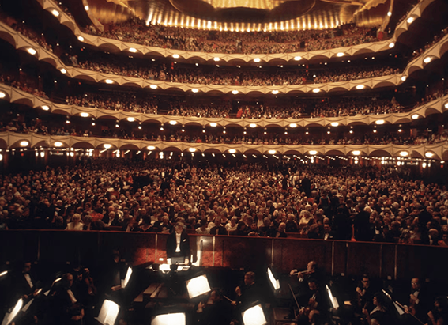
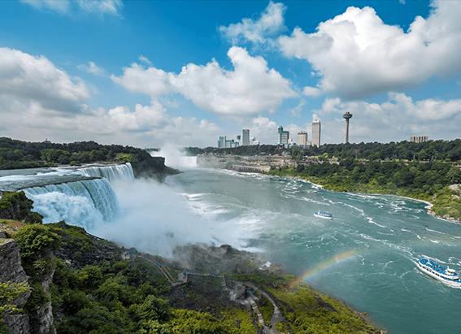
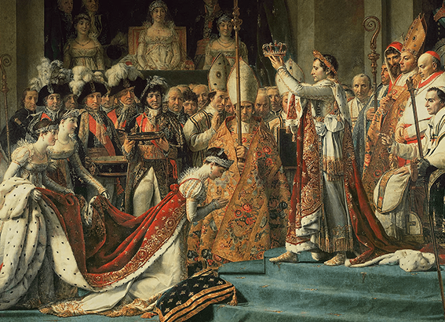

NATIONAL GEOGRAPHIC

Uncover the Secret Side of Rio de Janeiro
TRAVEL
Since the release of the animated movie Rio (2011), parents and kids might be forgiven for thinking the city on the coast of Brazil is populated by frolicking blue macaws, red-crested cardinals, and yellow canaries that spar with Britishaccented cockatoos and yet, feathers do indeed dance both down on the streets and high above Rio.
During the fabled celebrations of Carnival, exotic costumes topped off by feathered headdresses and colorful boas flutter about every corner of the city as part of one of the world’s greatest parties which has evolved into a combination of music, dance, and fantasy that can singlehandedly kick-start a universe of creativity for young minds.
Yet, although there is great benefit from letting kids enjoy the frenetic rhythms of the city, there is ample room for them to discover a more serene, reflective Rio atop the enchantingly named Sugarloaf Mountain (Pão de Açúcar).
Prime postcard material beautifully set in an otherwise entirely postcard-worthy city, the 600-million-year-old, granite-and-quartz peak is not only a “registered trademark” of Rio, but it stands as a beguiling, bold monument to Brazil’s nature, history, and tourism. Jutting out of the Atlantic like a stony sentinel, the mountain affords mesmerizing views of the city, the ocean, Guanabara Bay, and the many green-covered mountain droplets that rise within Rio’s panorama.
“On the way up to the Pão de Açúcar, one is overcome by a wonderful, magical feeling that can naturally stimulate a child’s imagination,” says local Rita Vieira de Souza daughter of a Brazilian ambassador who grew up in various countries and experienced firsthand the benefits of early immersion into a global education. Now an English teacher with a background in child psychology, Souza says, “One feels that he or she is in a different, fascinating world surrounded by nature this is amplified in a child’s mind.”
With cable cars soaring swiftly to the quarter-mile-high mountain, it’s not hard to picture where the inspiration for an animated movie featuring birds of a feather flocking together could have come from. Only the third cable-car operation in the world when it opened in 1912, the Sugarloaf system ushered in a new era of tourism for Brazil as a whole, and enabled millions of visitors (some 37 million by certain estimates) to conquer one of the world’s most recognizable monoliths.
It was at the foot of the Sugarloaf that Portuguese explorers founded the city of Rio de Janeiro in 1565. And, just as Rio in its early days was subject to attack by (mostly French) pirates and buccaneers, the mountain guarding Guanabara Bay would be subject to conquest centuries later at the hands of the many mountaineering nationalities that scaled its steep surface—the British (in 1817), the Portuguese (in 1817, one day after the British), and the Americans (in 1851) all planted their flags at the summit.
As an alternative to the cable cars, families seeking a sky-high adventure can opt for a helicopter ride from Morro da Urca, which circles Sugarloaf. Who knows? Your child might even spot a singing blue macaw, like that in the movie, trying to learn to fly.
Comments :
- john Very good
- john Very good
Leave a Reply
Your email address will not be published. Required fields are marked*
Related posts:
-
What was Leonard Bernstein and JFK's friendship really like
Leonard Bernstein and John F. Kennedy: One was a maestro, the other a president, and both were titans of 20th-century America. They were also unexpected friends whose relationship represented the union of American arts
View article -
In 1969, the U.S. turned off Niagara Falls. Here’s what happened next.
In the summer of 1969, America brandished its mastery over nature, landing a man on the Moon. Closer to home and perhaps to Americans’ hearts it shut off Niagara Falls.
View article -
The truth behind the turbulent love story of Napoleon and Joséphine
Revered in equal parts as hero or villain, Emperor Napoleon I led France from the rubble of the Revolution to peace and political stability. At the same time, he undertook a military expansion that at its height saw him control
View article